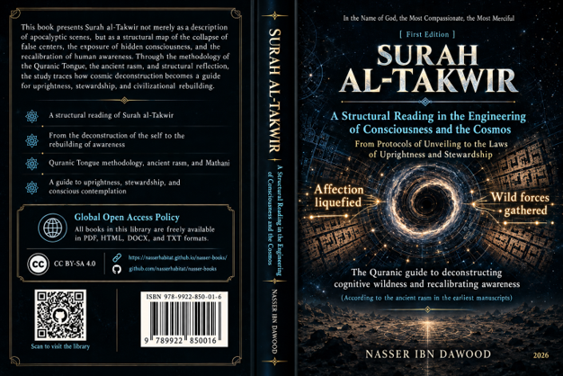

Nasser Ibn Dawood

Text extracted from the author-supplied Word edition; consult the original source.
Preparing the reader…
SURAH AL-TAKWIR
A Structural Reading in the Engineering of Consciousness and the Cosmos
From Protocols of Unveiling to Laws of Uprightness and Stewardship
A Condensed Conceptual English Adaptation
Nasser Ibn Dawood
nasserhabitat.github.io/nasser-books/
The Quranic Guide to Deconstructing Cognitive Wildness and Recalibrating Awareness
I. The Global Knowledge Manifesto
Knowledge is a universal right. The author firmly believes that wisdom should not be locked behind paywalls or language barriers.
Global Access Policy: All books in this library are available for free in multiple digital formats (PDF, HTML, DOCX, TXT).
The Digital Library: As of early 2026, the collection hosts 68 volumes (34 in Arabic and 34 in English), fully optimized for AI-assisted research and digital archiving.
Official Platforms: Main Website: nasserhabitat.github.io/nasser-books/
GitHub: nasserhabitat/nasser-books
II. Translator’s Note: The Bridge of Meaning
This English edition is a condensed conceptual adaptation. It is not a word-for-word translation, but rather an "extraction of essence." It presents the core philosophical framework in accessible English, omitting the exhaustive linguistic debates and classical references found in the original Arabic text.
For the academic researcher: The original Arabic version remains the primary source for comprehensive linguistic analysis, detailed exegesis (Tafsir), and the complete bibliography.
Editorial Orientation for the International Reader
The Arabic original uses the vocabulary of systems engineering, physics, information flow, energy, calibration, programming, and architecture as a conceptual language for reading the surah. This condensed edition preserves that vocabulary because it is central to the author’s method. At the same time, the book itself repeatedly treats contemporary technical parallels as illustrative analogies rather than replacements for the revealed text. Accordingly, expressions such as “operating system,” “signal,” “noise,” “collapse,” “energy,” and “calibration” should be read here as elements of the author’s interpretive model unless a claim is independently established in a scientific discipline.
The adaptation also preserves a second methodological boundary stated in the Arabic volume: this project does not seek to erase the classical exegetical tradition. It proposes an additional structural and civilizational layer of reading—one that asks about the law behind the image, the system behind the event, and the present ethical function behind the eschatological scene.
Contents
1. Opening Perspective — From the End of the World to the Recalibration of Awareness
2. Methodological Keys — The Quranic Tongue, Ancient Rasm, Mathani, and Structural Calibration
3. The First Movement — Deconstruction of Stable Centers (81:1–6)
4. The Second Movement — Sorting, Exposure, and the Awakening of the Self (81:7–14)
5. The Epistemic Movement — How a Reliable Message Is Authenticated (81:15–25)
6. The Existential Movement — “So Where Are You Going?” (81:26–29)
7. From Takwir to Ta‘mir — Turning Eschatological Deconstruction into a Civilizational Discipline
8. Open Knowledge, Anti-Monopoly, and the Ethics of Transmission
9. Methodological Boundaries and Critical Cautions
10. Concluding Synthesis — The Revealed Mirror
Glossary of Core Terms
1. Opening Perspective — From the End of the World to the Recalibration of Awareness
Surah al-Takwir is often encountered as a succession of terrifying images: the sun folded away, the stars darkened, the mountains set in motion, valuable possessions abandoned, wild creatures gathered, seas ignited, records opened, the sky stripped away, Hell kindled, Paradise brought near, and finally the human self made to know what it has brought forward. The Arabic book on which this edition is based asks a different but complementary question: what if these images are not merely separate scenes of the Last Day, but stages in a tightly organized architecture of unveiling?
The central thesis is that the surah can be read as a progressive dismantling of every external structure behind which the human being can hide. The sequence begins with the collapse or inward folding of cosmic centers, moves through the loss of social and economic securities, reaches the gathering and exposure of the hidden contents of the self, and culminates in the sentence: “A soul shall know what it has brought.” In this reading, the eschatological event is simultaneously an event of knowledge. The end of the familiar world is also the end of cognitive cover.
This gives the surah a double horizon. On one horizon it speaks about the compulsory future: a moment when the created order is transformed and the self stands before its record. On the other, it becomes a mirror for the present: the reader is invited to perform voluntarily, through reflection and moral discipline, what the final event will impose involuntarily—remove false centers, expose hidden motives, examine inherited certainties, recover buried conscience, and align action with truth.
The book therefore describes a movement from takwir to ta‘mir: from folding, dismantling, and stripping away to constructive inhabitation, stewardship, and civilization. Deconstruction is not the final aim. It is the clearing operation that makes responsible construction possible. The question is not only, “What will collapse?” but also, “What must be dismantled in me and in my society before a sound structure can be built?”
The Surah as a Four-Movement Architecture
Movement